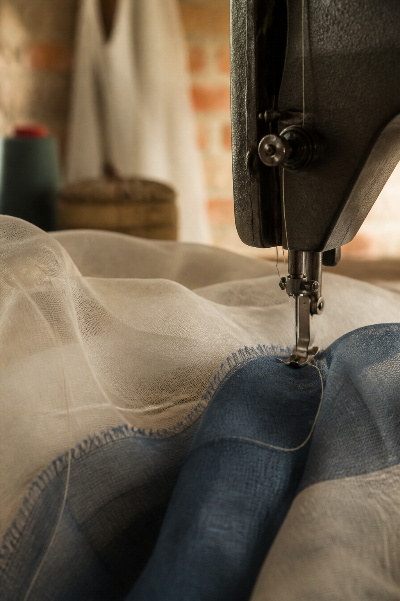

01 / BREATHE
옷장에서
자연스럽게 꺼내는 한복.
특별한 날을 기다리지 않습니다. 셔츠와 데님 위에 겹쳐 입고, 익숙한 하루 속에서 새로운 몸짓을 만듭니다.
SEOLBAEK / 雪白
보존되는 유물에서
살아 숨 쉬는 오늘의 옷으로.
01 / BREATHE
특별한 날을 기다리지 않습니다. 셔츠와 데님 위에 겹쳐 입고, 익숙한 하루 속에서 새로운 몸짓을 만듭니다.
02 / LAYER
과거를 그대로 재현하기보다 지금의 감각과 만나 변화하도록 둡니다. 설백에게 전통은 계속 움직이는 재료입니다.
THE NAME / 白
한국의 정체성을 품은 흰옷의 기억.
모든 창작과 오늘의 색이 시작되는 여백.

SEASON AESTHETIC
개발되지 않은 중촌동 골목의 거친 질감. 바늘과 미싱이 가진 쇠의 감각. 그 위로 내려앉는 부드러운 원단.
강한 광택 대신 낮은 빛, 가는 선, 실과 재봉의 흔적으로 두 감각의 충돌과 공존을 기록합니다.
OUR PHILOSOPHY
보존이 아닌 호흡SEASON 01 만나기
옷 안에서 다시 살아나는 한국.